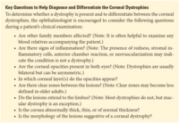
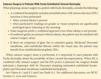

Figure 8-23 Clinical slit-lamp photograph demonstrates punctate opacities just anterior to Descemet membrane in pre-Descemet corneal dystrophy. (Courtesy of Robert S. Feder, MD.)
CHAPTER 8
Diagnosis and Management of Corneal Dystrophies
This chapter includes related videos. Go to aao.org/bcscvideo_section08 or scan the QR codes in the text to access this content.
This chapter also includes a case study. Go to aao.org/bcsccasestudy_section08 or scan the QR code in the text to access this content.
Indicates selected key points within the chapter.
General Considerations
Patients with corneal dystrophies can be asymptomatic. When symptoms occur, they may include blurred vision due to irregular astigmatism or corneal clouding due to deposition of material or edema. In addition, patients may experience foreign-body sensation and photophobia due to corneal erosions. Depending on the symptoms and diagnosis, treatment can range from conservative measures (eg, contact lens or topical supportive or therapeutic drops) to surgical options (including surface ablation and all types of corneal transplantation).
Corneal dystrophies typically
The International Committee for the Classification of Corneal Dystrophies (IC3D) revised the dystrophy nomenclature for a third time in 2024 to more accurately reflect the evolving genetic, clinical, and histologic characteristics of the conditions, which are classified into 4 groups:
In addition to the 4 classification groups, each dystrophy is assigned to 1 of 4 categories on the basis of established mapped and identified genetic variants. Category 1 denotes a well-defined dystrophy in which the gene has been mapped and identified and the specific variants are known, whereas Category 4 is reserved for suspected, new, or previously documented dystrophies that lack convincing and reproducible genetic mapping. Although genetics has an increasingly important role in the classification of corneal dystrophies and in future potential therapies, laboratory testing is not readily available or financially feasible for routine diagnosis. Therefore, a core clinical knowledge of corneal dystrophies is most practical for the reader of this edition.
This chapter primarily discusses Category 1 dystrophies. Epithelial basement membrane dystrophy (Category 3) and pre-Descemet corneal dystrophy (Category 4) are also included here. Although these latter conditions most likely represent corneal degenerations (ie, given their lack of genetic mapping), they have been firmly established in the literature (including in the IC3D review) as corneal dystrophies and are thus discussed in this chapter. For this reason, they are also included in Table 8-1 , which presents the major Category 1 corneal dystrophies in the IC3D classification. A comprehensive description of most corneal dystrophies is beyond the scope of this volume but is available in the IC3D publication (https://corneasociety.org/publications/ic3d).

For further discussion of genetics, see Part III, Genetics, in BCSC Section 2, Fundamentals and Principles of Ophthalmology. See also the Cornea chapter in Section 4, Ophthalmic Pathology and Intraocular Tumors.
Weiss JS, Rapuano CJ, Seitz B, et al. IC3D classification of corneal dystrophies—edition 3. Cornea. 2024;43(4):446–527.
Weiss JS, Willoughby CE, Abad-Morales V, Turunen JA, Lisch W. Update on the corneal dystrophies‒genetic testing and therapy. Cornea. 2022;41(11):1337–1344.
Major Corneal Dystrophies
Epithelial and Subepithelial Dystrophies
Epithelial basement membrane dystrophy
Alternative names Map-dot-fingerprint dystrophy, anterior basement membrane dystrophy, Cogan microcystic epithelial dystrophy
Inheritance No inheritance documented. Epithelial basement membrane dystrophy (EBMD) is considered degenerative and not a true dystrophy; however, it is listed among the dystrophies because of its historical classification.
clinical presentation EBMD occurs in 6%–18% of the US population, more commonly in women, with increasing frequency in patients older than 50 years. The typical findings in the corneal epithelium are best seen by using a broad oblique slit-lamp beam or with retroillumination. (See Chapter 2 for a discussion of slit-lamp biomicroscopy.) The clinician can also identify EBMD by using the sclerotic scatter illumination technique. Using these techniques, the clinician can observe 4 typical patterns:
These abnormalities occur in varying combinations and can change in number and distribution over time. Fingerprint lines are thin, parallel, hairlike lines that may be arranged in a concentric pattern resembling fingerprints or a horse’s tail (Fig 8-1). Maps are geographic, irregular patterns or islands of thickened, gray, hazy epithelium with scalloped, circumscribed borders resembling coastlines (Fig 8-2). Dots are irregular round, oval, or comma-shaped intraepithelial opacities with discrete edges that contain the debris of epithelial cells; these cells collapsed and degenerated before reaching the epithelial surface (Fig 8-3). The bleb pattern resembles pebbled glass and is best seen with retroillumination.
Symptoms such as foreign-body sensation are typically related to recurrent epithelial erosions. Blurred vision and monocular diplopia, commonly described by patients as seeing “ghost” or “shadow” images, occur most frequently in patients older than 30 years. The impact of EBMD on vision correlates with the degree of surface disruption in proximity to the visual axis. The surface disruption appears as an irregularity with instillation of topical fluorescein. Elevated areas of irregular epithelium may appear dark with a cobalt blue filter, with fluorescein pooling at the base. Irregular astigmatism is confirmed on keratometry as irregular mires or on Placido disk imaging as irregular rings (Fig 8-4).
Refracting over a rigid gas-permeable (RGP) contact lens neutralizes superficial corneal surface irregularities and helps determine the impact of these findings on visual potential. That is, the patient may experience improved vision with the RGP lens in place, as it smooths the irregular surface.
Symptoms of recurrent erosion typically occur in the morning; however, discomfort in the morning may also occur in patients with nocturnal lagophthalmos. In the latter, however, punctate erosions are usually noted in the inferior cornea. It is estimated that 10% of patients with EBMD have corneal erosions, but up to 50% of those with recurrent corneal erosions also have EBMD. Therefore, examination of the fellow eye is recommended.
Unilateral dystrophic changes may be attributed to an asymmetric dystrophy or focal trauma. In some cases, clinical findings may mimic those of corneal malignancy; therefore, submitting removed material for histologic study may be warranted.
Corneal dystrophies, ectatic disorders, and degenerations. In: Mannis MJ, Holland EJ, eds. Fundamentals, Diagnosis and Management. 5th ed. Elsevier; 2022:696–801. Cornea; vol 1.
pathology EBMD is an abnormality of epithelial turnover, maturation, and production of basement membrane. Histologic findings include the following:
management Asymptomatic patients usually do not require treatment. In patients with irregular astigmatism and blurred vision, epithelial debridement may be helpful. Most recurrent corneal erosions resulting from EBMD can be managed medically with hypertonic sodium chloride ointment at night and/or drops during the day. Alternative therapies may include increasing lubrication (ie, punctal plugs, topical cyclosporine, or artificial tears) or a temporary bandage contact lens or amniotic membrane application. The use of a protective shield during sleep can also be helpful. Surgical management of recurrent erosions includes epithelial debridement, anterior stromal puncture, excimer laser phototherapeutic keratectomy (PTK), or superficial keratectomy with diamond burr polishing. See Chapter 4 for further discussion of recurrent corneal erosion.
Meesmann corneal dystrophy
Alternative names Juvenile hereditary epithelial dystrophy
Inheritance Autosomal dominant (AD)
clinical presentation Meesmann corneal dystrophy (MECD) appears very early in life. Tiny intraepithelial vesicles that extend to the limbus are seen most easily at the slit lamp with indirect illumination or retroillumination. The vesicles appear as minute bubblelike blebs (Fig 8-5). In 85% of eyes with MECD, the entire epithelium is affected; however, the epithelium surrounding the cyst is clear. Whorled and wedge-shaped epithelial patterns may be observed. The cornea may be slightly thinned, and corneal sensation may be reduced. Symptoms are usually limited to mild ocular irritation and a slight decrease in vision. Some patients report glare and light sensitivity. Painful recurrent erosions may also occur.
pathology Intraepithelial cysts consisting of degenerated epithelial cell products, which stain with periodic acid–Schiff (PAS) reagent, are present. The epithelial cells contain an electron-dense accumulation of fibrogranular material surrounded by tangles of cytoplasmic filaments (ie, “peculiar substance”). There are frequent mitoses and a thickened basement membrane with projections into the basal epithelium. On confocal microscopy, hyporeflective areas ranging in diameter from 40 µm to 150 µm are generally observed in the basal epithelium; however, some scattered hyperreflective circular spots may also be observed within these areas.
management Most patients require no treatment, but if symptoms are frequent, soft contact lens wear may be helpful.
Lisch epithelial corneal dystrophy
Alternative names Band-shaped and whorled microcystic dystrophy of the corneal epithelium
Inheritance AD
clinical presentation Patients with Lisch epithelial corneal dystrophy (LECD) may be asymptomatic or may report blurred vision (if the central visual axis is involved). With direct and indirect illumination on slit-lamp examination, gray epithelial opacities are visualized in patterns (whorl-like, bands, flame or feather shaped) (Fig 8-6). These lesions progress slowly and can recur after excision.
LECD may be confused with whorl keratopathy, limbal stem cell deficiency, and corneal malignancy. Clinical correlation is needed to identify a precipitating event for limbal stem cell deficiency. The presence of vascularity can help discern corneal malignancy from LECD.
pathology On histologic examination, vacuoles stain with PAS. Confocal microscopy demonstrates 4 characteristic features: highly hyperreflective cytoplasm with hyporeflective nuclei, uniform involvement of all epithelial layers, distinct borders with adjacent normal epithelium, and limbal involvement.
management Same as for EBMD management. Surgical intervention is rarely needed.
Gelatinous droplike corneal dystrophy
Alternative names Subepithelial amyloidosis, primary familial amyloidosis (Grayson)
Inheritance Autosomal recessive (AR)
clinical presentation Onset of gelatinous droplike corneal dystrophy (GDLD) is in the first to second decade of life. Groups of multiple small nodules (mulberry configuration; Fig 8-7A) or lesions that appear similar to those of band keratopathy (Fig 8-7B) can be observed just beneath the epithelial layer. The lesions are visible on fluorescein staining. Superficial vascularization is often present. Stromal opacification (Fig 8-7C) or larger nodular lesions (kumquat-like lesions; Fig 8-7D) may develop as the condition progresses. Individuals with GDLD typically experience a significant decrease in vision, with photophobia, irritation, and tearing.
Ide T, Nishida K, Maeda N, et al. A spectrum of clinical manifestations of gelatinous drop-like corneal dystrophy in Japan. Am J Ophthalmol. 2004;137(6):1081–1084.
pathology Light microscopy reveals subepithelial and stromal amyloid deposits. Disruption of tight junctions leads to abnormally high epithelial permeability. Confocal microscopy shows irregular, elongated epithelial cells with large accumulations of brightly reflective material (amyloid) noted within or beneath the epithelium and within the anterior stroma. Amyloid deposition may be noted in the basal epithelial layer on transmission electron microscopy. See also Chapter 10 for discussion of amyloidosis.
management Surgical treatment options include superficial keratectomy, lamellar keratoplasty (LK), or penetrating keratoplasty (PK). However, there is a high recurrence rate within a few years of treatment. Soft contact lens use may help reduce postoperative recurrences.
Epithelial–Stromal TGFBI Dystrophies
The dystrophies in this class are caused by pathogenic variants in the same gene, TGFBI, and have been mapped to 5q31. However, each dystrophy has a specific point mutation that genetically differentiates it from the others (Table 8-2).
Reis-Bücklers corneal dystrophy
Alternative names Corneal dystrophy of Bowman layer type 1 (CDB1), geographic corneal dystrophy (Weidle)
Inheritance AD
clinical presentation Reis-Bücklers corneal dystrophy (RBCD) appears in the first few years of life and affects mainly Bowman layer. Confluent, irregular, and coarse geographic opacities with varying densities develop primarily in the central cornea at both the level of Bowman layer and the superficial stroma (Fig 8-8A). Over time, the opacities may extend to the limbus and deeper stroma.
The posterior cornea appears normal. In moderate to advanced cases, stromal scarring can lead to surface irregularity. Symptoms often begin in the first or second decade of life with painful recurrent epithelial erosions. The erosions in eyes with RBCD are usually more severe and more frequent than in eyes with Thiel-Behnke corneal dystrophy (TBCD), but they recur less often over time. Anterior scarring and associated surface irregularity both contribute to reduced vision.
pathology Confocal microscopy (Fig 8-8B) shows distinct deposits in the epithelium and Bowman layer (Fig 8-8C). The basal epithelial cell layer and Bowman layer show greater reflectivity in RBCD than in TBCD. RBCD reflectivity stems from small granular or amorphous material without shadows. In TBCD, the deposits in the basal epithelial cell layer, which show less reflectivity, are accompanied by dark shadows. In RBCD, light microscopy (see Fig 8-8C) reveals disruption or absence of Bowman layer and replacement with a sheetlike connective tissue layer. This layer contains granular deposits that stain red with Masson trichrome stain. Transmission electron microscopy shows subepithelial electron-dense rod-shaped bodies that are immunopositive for the TGFBI protein, also called keratoepithelin. Electron microscopy is helpful in differentiating RBCD histologically from TBCD, which has curly fibers (see the Thiel-Behnke corneal dystrophy section).
management Initial treatment of RBCD is aimed at the recurrent erosions. Superficial keratectomy, PTK, LK, or, in rare instances, PK may be performed. Deep anterior lamellar keratoplasty (DALK) has a lower risk of endothelial rejection and reduced risk of corneal rupture associated with trauma compared with PK. Recurrence in a graft is common in all forms of keratoplasty.
Meghpara B, Hammersmith KM. Anterior corneal dystrophies. In: Mannis MJ, Holland EJ, eds. Fundamentals, Diagnosis and Management. 5th ed. Elsevier; 2022:701–711. Cornea; vol 1.
Thiel-Behnke corneal dystrophy
Alternative names Corneal dystrophy of Bowman layer type 2 (CDB2), honeycomb-shaped corneal dystrophy, Waardenburg-Jonkers corneal dystrophy
Inheritance AD
clinical presentation The onset of Thiel-Behnke corneal dystrophy (TBCD) is in the first or second decade of life, manifesting as solitary flecks at the level of Bowman layer. Over time, symmetric subepithelial reticular opacities develop in a honeycomb pattern, sparing the peripheral cornea (Fig 8-9A). The opacities may progress to the deep stromal layers and the corneal periphery. Distinguishing TBCD from RBCD clinically is difficult, but noninvasive optical coherence tomography (OCT) and confocal microscopy may help differentiate these entities. Recurrent erosions are less frequent and less severe in TBCD than in RBCD. Vision decreases secondary to increased corneal opacification.
pathology Anterior segment OCT (AS-OCT) demonstrates hyperreflective material at the level of Bowman layer in a characteristic sawtooth configuration that helps distinguish TBCD from RBCD (Fig 8-9B). Light microscopy (Fig 8-9C) shows irregular thickening and thinning of the epithelial layer, which offset the ridges and furrows in the underlying stroma and the focal absences of the epithelial basement membrane. Bowman layer is replaced with fibrocellular material in the same pathognomonic wavy or sawtooth pattern. On electron microscopy, curly fibers (9–15 nm) rather than rod-shaped bodies are apparent, further distinguishing this dystrophy from RBCD. These curly fibers are immunopositive for the TGFBI protein, which is associated with the 5q31 locus. On confocal microscopy, distinct deposits are observed in the epithelium and Bowman layer. The deposits in the basal epithelial cell layer show moderate reflectivity, with round edges and dark shadows not seen in RBCD. Bowman layer is replaced with irregular material that is reflective, but less reflective than in RBCD. The changes that differentiate RBCD from TBCD are summarized in Table 8-3.
Latifi G. Corneal dystrophies. In: Latifi G, Hau S, eds. In Vivo Confocal Microscopy in Eye Disease. Springer-Verlag London Ltd; 2022:61–90.
management Management of TBCD is similar to the approach used for RBCD.
Lattice corneal dystrophy (classic and variants)
Alternative names (for classic lattice corneal dystrophy) LCD type 1; Biber-Haab-Dimmer
Inheritance AD
clinical presentation Classic lattice corneal dystrophy (LCD), formerly called LCD type 1, is relatively common and is characterized by refractile branching lines, so-called lattice lines, in the corneal stroma. The spectrum of corneal changes is broad, and the classic branching lattice lines may not be present in all cases. Subtle refractile lines, central and subepithelial ovoid white dots, and diffuse anterior stromal haze appear early in life and, in a corneal graft, these may be the first signs of recurrence. The typical refractile branching lines develop as the condition progresses and are best observed against a red reflex or with indirect illumination (Fig 8-10). These lines start centrally and superficially and spread centrifugally, becoming deeper. The stroma can take on a “ground-glass” appearance, but the peripheral cornea typically remains relatively clear. Epithelial erosions may occur as early as the first decade of life and recur often. Stromal haze and epithelial surface irregularity may decrease vision, typically in the fourth decade.
Familial amyloidosis with lattice corneal changes (formerly LCD type II) is no longer considered a dystrophy (see Chapter 10). Variant LCD type IIIA is associated with severe erosions that occur later in life. Thick, ropy lattice lines and heavy amyloid deposits are present (Fig 8-11). Because the findings in LCD type IV occur more posteriorly than those in type IIIA, type IV is less likely to be associated with erosions.
Crystalline deposits related to monoclonal gammopathy may resemble lattice lines. Polymorphic amyloid degeneration (PAD) is often confused with lattice dystrophy; however, PAD presents in older individuals and occurs in the central and paracentral cornea, predominantly affecting the midstroma and posterior stroma. (See , Table 10-3 for a summary of the ways in which amyloid occurs in the eye.)
pathology Light microscopy of classic LCD reveals arborizing amyloid deposits concentrated most heavily in the anterior stroma. Amyloid may also accumulate in the subepithelial area, giving rise to poor epithelial–stromal adhesion, which results in corneal erosions. Epithelial atrophy and disruption, with degeneration of basal epithelial cells and focal thinning or absence of Bowman layer, progressively increase with age. An eosinophilic layer develops between the epithelial basement membrane and Bowman layer, with stromal deposition of the amyloid substance distorting the corneal lamellar architecture.
Amyloid appears red orange with Congo red stain ( Fig 8-12A) and metachromatically with crystal violet dye (Table 8-4). Amyloid also exhibits birefringence, manifested as both dichroism (Fig 8-12B) and the ability to change the axis of polarized light. See BCSC Section 4, Ophthalmic Pathology and Intraocular Tumors, for further discussion.
Electron microscopy reveals extracellular masses of fine 8–10-µm fibrils that are electron dense and randomly aligned. In vivo confocal microscopy reveals lattice lines in the corneal stroma (Fig 8-13) that should be differentiated from those associated with fungal hyphae.
Pradhan MA, Henderson RA, Patel D, McGhee CN, Vincent AL. Heavy-chain amyloidosis in TGFBI-negative and gelsolin-negative atypical lattice corneal dystrophy. Cornea. 2011;30(10):1163–1166.
management Recurrent erosions are managed with therapeutic bandage contact lenses, superficial keratectomy, or PTK. Severe cases of lattice dystrophy with vision loss are treated with DALK or PK. Recurrence of lattice dystrophy in the corneal graft is common.
Granular corneal dystrophy type 1
Alternative names Groenouw corneal dystrophy type I, classic granular dystrophy
Inheritance AD
clinical presentation The onset of granular corneal dystrophy type 1 (GCD1) occurs early in life with crumblike opacities in the superficial cornea. With direct illumination, the opacities appear white; however, indirect illumination reveals small translucent dots with vacuoles and a glassy splinter or “crushed bread crumb” appearance. Early in the disease process, the lesions are separated by clear spaces but later become more confluent. The lesions do not extend to the limbus but can extend anteriorly through focal breaks in Bowman layer (Fig 8-14). GCD1 is slowly progressive, with most patients maintaining good vision and visual acuity, dropping to 20/200 only after age 50 years in rare cases. Patients report glare and photophobia. Recurrent erosions occur, and vision decreases as the opacities become more confluent.
Although the exact cause of GCD1 is unknown, a pathogenic variant in the TGFBI gene on band 5q31 accounts for differences in the clinical presentations of RBCD, classic LCD, and GCD type 2.
pathology The deposited granular material stains bright red for hyaline with Masson trichrome (Fig 8-15; see Table 8-4). Electron microscopy reveals an electron-dense material made up of rod-shaped bodies immersed in an amorphous matrix. Histochemically, the deposits are noncollagenous protein that may derive from the corneal epithelium and/or keratocytes. Hyperreflective opacities are seen on confocal microscopy.
management Early in the disease process, no treatment is needed. Recurrent erosions may be treated with therapeutic contact lenses and superficial keratectomy. PTK may be effective in temporarily controlling recurrent erosions and improving vision but can result in a hyperopic shift. When vision is inadequate, DALK or PK has a good prognosis. Recurrence is possible, presenting as fine subepithelial opacities anteriorly and peripherally in contrast to the original presentation.
Laser refractive surgery is contraindicated in patients with transforming growth factor beta–induced dystrophies such as granular dystrophy because of the risk of worsening the corneal opacity.
Granular corneal dystrophy type 2
Alternative names Avellino corneal dystrophy, combined granular-lattice dystrophy
Inheritance AD
clinical presentation In patients with granular corneal dystrophy type 2 (GCD2), short, white linear lesions (resembling short dashes) are seen. Stellate, snowflake-like, and icicle-like opacities appear between the superficial stroma and midstroma (Fig 8-16). The dashlike lines are deep to these opacities. In addition, the lines in GCD2 rarely cross each other. In contrast, the lines in classic LCD frequently intersect and are more refractile. Younger patients with GCD2 have commonly recognized “clear intervening spaces” between the deposits. However, as these patients mature, stromal haze may develop between deposits and reduce vision. Pain may occur with mild corneal erosions.
pathology Pathologically, both the hyaline deposits typical of granular dystrophy and the amyloid deposits typical of lattice dystrophy are present in GCD2. These lesions extend from the basal epithelium to the deep corneal stroma. Individual opacities stain with Masson trichrome or Congo red stain. On electron microscopy, the deposits appear as rod-shaped bodies; randomly aligned fibrils of amyloid are also seen. Findings on confocal microscopy are a combination of those seen in GCD1 and classic LCD.
management LK or PK may be useful, depending on the depth of the deposits. The dystrophy can recur in the graft. PTK is an alternative treatment and can be performed to reduce surface irregularity and increase corneal clarity. It can also result in a hyperopic refractive shift. Laser in situ keratomileusis and photorefractive keratectomy are contraindicated because they may worsen the corneal opacity.
Holland EJ, Daya SM, Stone EM, et al. Avellino corneal dystrophy. Clinical manifestations and natural history. Ophthalmology. 1992;99(10):1564–1568.
Kim TI, Hong JP, Ha BJ, Stulting RD, Kim EK. Determination of treatment strategies for granular corneal dystrophy type 2 using Fourier-domain optical coherence tomography.
Br J Ophthalmol. 2010;94(3):341–345.
Stromal Dystrophies
Macular corneal dystrophy
Alternative names Groenouw corneal dystrophy type II, Fehr speckled dystrophy
Inheritance AR
clinical presentation Macular corneal dystrophy (MCD) occurs less frequently than the stromal dystrophies associated with alterations in the carbohydrate sulfotransferase 6 gene (CHST6), located on chromosome 16 (16q22). Unlike most corneal dystrophies, MCD is a recessive disorder that involves the entire corneal stroma including the periphery, and it may involve the corneal endothelium.
Individuals with MCD have clear corneas that begin to cloud between 3 and 9 years of age. Patients initially show superficial, irregular, whitish flecklike opacities that evolve into focal, gray-white, superficial stromal opacities with intervening diffuse haze, in contrast to GCD in younger patients, which has clear intervening spaces between deposits. The opacities, which have indefinite edges (Fig 8-17), tend to be more superficial centrally and more posterior peripherally.
Involvement of Descemet membrane and endothelium is evidenced by the presence of cornea guttae, but corneal edema does not occur. Dystrophic opacities in the periphery may also appear similar to keratic precipitates; however, in contrast to inflammatory lesions, these occur in all quadrants of the posterior cornea. Epithelial erosions rarely develop, but a severe decrease in vision typically occurs between 10 and 30 years of age. Hypoesthesia has been noted.
There are 3 subtypes of MCD, which are clinically indistinguishable. To help differentiate between them, enzyme-linked immunosorbent assay (ELISA) can be used to measure antigenic keratan sulfate in the cornea and serum.
Diffuse corneal thinning is common in macular corneal dystrophy (MCD) despite the presence of guttata and may appear similar to long-standing interstitial keratitis (IK). However, patients with MCD lack the ghost vessels and thickened Descemet membrane seen in IK.
pathology The deposits in MCD are nonsulfated glycosaminoglycans (GAGs); they stain with colloidal iron and alcian blue (Fig 8-18; see Table 8-4). These deposits accumulate in the endoplasmic reticulum and not in lysosomal vacuoles, as seen in systemic mucopolysaccharidoses. Electron microscopy reveals keratocytes and endothelial cells that stain positive for GAGs, as well as extracellular clumps of fibrogranular material that also stain for GAGs. On confocal microscopy, blurred accumulations of light-reflective material are seen in the anterior corneal stroma. In contrast to patients with MCD, patients with systemic mucopolysaccharidoses with corneal involvement (eg, Hurler syndrome) present with an early and more diffuse opacification without flecks.
management In MCD, recurrent erosions are rare and should be treated. Photophobia may be reduced with tinted contact lenses. PTK may be used for symptomatic anterior macular dystrophy. Definitive treatment requires PK or DALK, and recurrences of macular deposits are uncommon.
Aldave AJ, Bonnet C, de Sousa LB. The stromal dystrophies. In: Mannis MJ, Holland EJ, eds. Fundamentals, Diagnosis and Management. 5th ed. Elsevier; 2022:712–729. Cornea; vol 1.
Schnyder corneal dystrophy
Alternative names Schnyder crystalline corneal dystrophy (SCCD)
Inheritance AD
clinical presentation Schnyder corneal dystrophy (SCD) is a rare, slowly progressive stromal dystrophy that may become apparent as early as the first year of life. Central subepithelial crystals are seen in 50% of SCD patients and do not involve the epithelium. Because half of affected patients do not have these crystals, the name Schnyder crystalline corneal dystrophy is no longer used. Hypercholesterolemia occurs in two-thirds of patients with SCD. The diagnosis is usually made by the second or third decade of life, although it may be further delayed in individuals who have the acrystalline form of the disease.
SCD disproportionately reduces photopic vision despite maintenance of excellent scotopic vision. Vision decreases with age. Although vision can be preserved, glare increases because of progressive corneal haze. The spectrum of disease is shown in Figure 8-19.
Corneal changes, which are progressive and predictable by age, include the following:
pathology This condition is thought to be a local disorder of corneal lipid metabolism. Pathologically, the opacities are accumulations of unesterified and esterified cholesterol and phospholipids. Lipids stain with oil red O and Sudan black B (see Table 8-4). In the usual process of embedding tissue in paraffin, cholesterol and other fatty substances are dissolved; therefore, it is important to submit fresh tissue to the pathologist for special lipid stains. Electron microscopy shows abnormal accumulation of lipid and dissolved cholesterol in the corneal epithelium, in Bowman layer, and throughout the stroma. Confocal microscopy reveals disruption of the basal epithelial/subepithelial nerve plexus, with highly reflective intracellular and extracellular deposits.
management PTK has been used to treat decreased vision resulting from subepithelial crystals, but it does not reduce panstromal haze. Patients older than 50 years with SCD usually require corneal transplant surgery to eliminate haze. The dystrophy can recur after PK or DALK.
In patients with Schnyder corneal dystrophy, a fasting lipid profile should be done to detect possible hyperlipoproteinemia or hyperlipidemia. Abnormal serum lipid levels are managed with dietary changes and/or medication, but despite this treatment, progression of the corneal dystrophy is unaltered. Unaffected family members may also have an abnormal lipid profile and should be screened.
Weiss JS. Visual morbidity in thirty-four families with Schnyder crystalline corneal dystrophy (an American Ophthalmological Society thesis). Trans Am Ophthalmol Soc. 2007;105:616–648.
Congenital stromal corneal dystrophy
Alternative names Congenital hereditary stromal dystrophy
Inheritance AD
clinical presentation Congenital stromal corneal dystrophy (CSCD) is characterized by bilateral diffuse corneal clouding with flakelike whitish opacities that are equally distributed throughout the stroma (Fig 8-20). The corneas are thickened, but the epithelium and endothelium are normal. The course is either nonprogressive or slowly progressive, with moderate to severe vision loss.
pathology In CSCD, the stromal lamellae are separated from each other in a regular manner, with an amorphous material between them at all levels of the stroma. Electron microscopy reveals that the collagen fibril diameter is approximately half the normal size in all lamellae. Abnormal lamellar layers consisting of thin filaments arranged in an electron-lucent ground substance separate the lamellae. Immunoelectron microscopy identifies accumulation of decorin in the amorphous areas. The keratocytes and endothelium are normal. Absence of the anterior banded zone of Descemet membrane has been reported. On confocal microscopy, the epithelial cells are normal; however, further evaluation is not possible because of increased reflectivity.
management Refractive error is corrected with glasses or contact lenses. Amblyopia therapy and/or strabismus surgery may be necessary. In advanced cases, PK or DALK may be considered when the diagnosis is certain.
Rødahl E, Knappskog PM, Bredrup C, Boman H. Congenital stromal corneal dystrophy. GeneReviews. November 25, 2008. Updated November 29, 2018. Accessed January 20, 2025. www.ncbi.nlm.nih.gov/books/NBK2690
Fleck corneal dystrophy
Alternative names François-Neetens speckled corneal dystrophy
Inheritance AD
clinical presentation Fleck corneal dystrophy (FCD) is a nonprogressive condition that may be congenital or may present early in the first decade of life. Discrete, flat, gray-white, dandrufflike (sometimes ring-shaped) opacities are sparsely distributed throughout the corneal stroma, extending to the periphery (Fig 8-21). The epithelium, Bowman layer, Descemet membrane, and endothelium are not involved. Fleck dystrophy may be unilateral or bilateral but asymmetric. Symptoms are minimal, and vision is usually not reduced. This dystrophy may be associated with decreased corneal sensation, limbal dermoid, keratoconus, central cloudy dystrophy of François, punctate cortical lens changes, pseudoxanthoma elasticum, or atopy.
pathology Affected keratocytes are vacuolated and contain 2 abnormal substances: excess GAG, which stains with alcian blue and colloidal iron, and lipids, which stain with Sudan black B and oil red O. Transmission electron microscopy reveals membrane-based inclusions with delicate granular material. Confocal microscopy shows an accumulation of pathologic material in stromal cells and inclusions in the basal nerves.
management None is required.
Posterior amorphous corneal dystrophy
Alternative names Posterior amorphous stromal dystrophy
Inheritance AD
clinical presentation Posterior amorphous corneal dystrophy (PACD) presents in the first decade of life with a diffuse, sheetlike gray-white opacity, usually in the posterior cornea (Fig 8-22). The condition is usually nonprogressive. The cornea is flat (<41.00 diopters) and thin (≥380 µm), and there is associated hyperopia. In eyes affected by PACD, Descemet membrane and the corneal endothelium may be indented by opacities. Focal endothelial abnormalities, a prominent Schwalbe line, fine iris processes, pupillary remnant, iridocorneal adhesions, corectopia, pseudopolycoria, and anterior stromal tags have been noted. There is no associated glaucoma. Visual acuity is usually 20/40 or better. PACD may be an example of mesodermal dysgenesis rather than a true corneal dystrophy given the early onset, lack of progression, similarity to cornea plana, and iris abnormalities.
Aldave AJ, Rosenwasser GO, Yellore VS, et al. Linkage of posterior amorphous corneal
dystrophy to chromosome 12q21.33 and exclusion of coding region mutations in KERA,
LUM, DCN, and EPYC. Invest Ophthalmol Vis Sci. 2010;51(8):4006–4012. doi:10.1167/iovs.09-4067
Dunn SP, Krachmer JH, Ching SS. New findings in posterior amorphous corneal dystrophy. Arch Ophthalmol. 1984;102(2):236–239.
pathology Focal attenuation of corneal endothelial cells and irregular stromal architecture anterior to Descemet membrane are observed on light microscopy. Electron microscopy reveals disorganization of the posterior stromal lamellae. A fibrillar layer interrupts Descemet membrane. On confocal microscopy, there are microfolds and a hyperreflective layer in the posterior stroma.
Johnson AT, Folberg R, Vrabec MP, Florakis GJ, Stone EM, Krachmer JH. The pathology of posterior amorphous corneal dystrophy. Ophthalmology. 1990;97(1):104–109.
management Typically no treatment is needed, but keratoplasty may be performed if opacities are visually significant.
Pre-Descemet corneal dystrophies
Pre-Descemet corneal dystrophy (PDCD), sometimes known as cornea farinata (ie, “flourlike cornea”), may actually be a degenerative condition rather than an inherited corneal dystrophy. However, a distinct pre-Descemet form called punctiform and polychromatic pre-Descemet corneal dystrophy (PPPCD) has been mapped.
Inheritance Unknown (PDCD); AD (PPPCD)
clinical presentation Onset of the pre-Descemet dystrophies is usually after 30 years of age, but PPPCD has been reported in children as young as 3 years old. The diffuse, polymorphic, gray opacities that may be seen in the deep stroma just anterior to Descemet membrane do not affect vision (Fig 8-23). The rest of the cornea is unaffected. Similar opacities have been described in pseudoxanthoma elasticum, X-linked and recessive ichthyosis, keratoconus, posterior polymorphous corneal dystrophy (discussed later), and EBMD.
pathology Large keratocytes are present in the posterior stroma, with vacuoles and intracytoplasmic inclusions containing lipid-like material. Electron microscopy reveals membrane-bound intracellular vacuoles containing electron-dense material suggestive of secondary lysosomes, and there are inclusions of lipofuscin-like lipoprotein, suggesting a degenerative process.
management None is indicated.
Endothelial Dystrophies
Fuchs endothelial corneal dystrophy
Alternative names Endoepithelial corneal dystrophy
Inheritance The gene for early-onset Fuchs endothelial corneal dystrophy (FECD) has been identified (COL8A2) and mapped and the specific pathogenic variant identified. Some forms of late-onset FECD have known genetic loci, but the gene has not yet been identified; however, transcription factor 4 may be implicated. Late-onset FECD most commonly presents with no known inheritance; however, cases with AD inheritance have been reported.
Afshari NA, Igo RP Jr, Morris NJ, et al. Genome-wide association study identifies three novel loci in Fuchs endothelial corneal dystrophy. Nat Commun. 2017;8:14898.
Gottsch JD, Sundin OH, Liu SH, et al. Inheritance of a novel COL8A2 mutation defines a distinct early-onset subtype of Fuchs corneal dystrophy. Invest Ophthalmol Vis Sci. 2005;46(6):1934–1939.
Li YJ, Minear MA, Rimmler J, et al. Replication of TCF4 through association and linkage studies in late-onset Fuchs endothelial corneal dystrophy. PLoS One. 2011;6(4):e18044. doi:10.1371/journal.pone.0018044
clinical presentation Fuchs dystrophy usually presents in the fourth decade of life or later, although early-onset FECD may present in the first decade of life. Symptoms are rare before age 50 years. As cornea guttae become confluent and endothelial fibrosis occurs, patients report glare and reduced contrast sensitivity. Symptoms often stem from corneal edema, which causes a decrease in vision. A distinguishing symptom of FECD is fogging of vision upon awakening due to decreased surface evaporation during sleep, which causes corneal edema. As endothelial function declines, corneal edema produces microbullae or microcystic edema. This can cause foreign-body sensation, also a symptom of dry eye, with which FECD may be confused. As FECD progresses, corneal edema and clouding change pachymetry results and lead to reduced vision. Painful episodes may subside once subepithelial fibrosis occurs.
Findings vary with the stage of FECD. Cornea guttae are first evident centrally and then spread toward the periphery (stage 1). In some patients, cornea guttae develop, but the disease never progresses beyond this stage (Fig 8-24). Cornea guttae may become confluent and take on a “beaten metal” appearance (Fig 8-25). In late-onset FECD, cornea guttae are larger than those observed in early-onset FECD. Stage 2 is characterized by endothelial decompensation and stromal edema. As the disease progresses, stromal edema may worsen, causing bullous keratopathy (stage 3). Descemet membrane may become thickened. Central corneal thickness may approach 1 mm (0.5–0.6 mm is typically considered normal). This can be associated with increased light scatter and symptoms of glare. In end-stage disease (stage 4), subepithelial fibrosis, scarring, and peripheral superficial vascularization secondary to chronic edema occur.
Although specular microscopy may be helpful in the initial evaluation of Fuchs dystrophy and in following the clinical course for loss of corneal endothelial cells, it is not necessary in the presence of diffuse confluent cornea guttae. Corneal thickness measurement with Scheimpflug tomography, optical coherence tomography, ultrasound biomicroscopy, or ultrasonic pachymetry provides a better indicator of corneal endothelial function. A significant increase in corneal thickness in the morning or over time or an increase in posterior elevation over time may indicate endothelial dysfunction. See for more detailed discussion of corneal pachymetry and specular microscopy.
Patel SV, Hodge DO, Treichel EJ, Spiegel MR, Baratz KH. Predicting the prognosis of Fuchs endothelial corneal dystrophy by using Scheimpflug tomography. Ophthalmology. 2020;127(3):315–323.
pathology In FECD, the endothelial cells are more varied in size (polymegethism) and shape (pleomorphism) than normal and are disrupted by excrescences of collagen. See the section Evaluation of Endothelial Appearance and Function in Chapter 2 for further discussion. Primary dysfunction of the endothelial cells manifests as increased corneal edema and deposition of collagen and extracellular matrix in a thickened Descemet membrane. It is not clear whether the reduction in the posterior nonbanded zone and the increase in thickness of the abnormal posterior collagenous layer are primary effects of endothelial dysfunction or are secondary to chronic corneal edema.
management Early morning blurred vision or minor pain related to corneal edema can be reduced with hypertonic sodium chloride drops and ointment (5%) and/or measures taken to reduce intraocular pressure (IOP). Note that topical or oral carbonic anhydrase inhibitors may decrease endothelial pump function and increase corneal edema.
Restoration of vision generally requires keratoplasty. In the absence of significant scarring, PK has largely been replaced with endothelial keratoplasty (EK; either Descemet stripping automated endothelial keratoplasty [DSAEK] or Descemet membrane endothelial keratoplasty [DMEK]). If significant stromal scarring is present, full-thickness keratoplasty should be considered. See Chapter 16 for discussion of keratoplasty.
In cases where the guttae are confined to the central cornea, Descemet stripping only, with the addition of a topical Rho kinase inhibitor to stimulate endothelial proliferation, is an alternative to keratoplasty that eliminates the risk of rejection; however, it may have a prolonged postoperative course. Recent advances using an injection of in vitro‒cultured endothelial cells have shown promise in helping with endothelial cell loss. This approach is under clinical investigation.
If keratoplasty cannot be done, persistent or more severe pain can be managed with anterior stromal puncture, bandage contact lenses designed for extended wear, placement of amniotic tissue, or conjunctival flap surgery (see Chapter 5).

VIDEO 8-1 Phacoemulsification with Fuchs dystrophy.
Courtesy of Edward J. Holland, MD.
Available at: aao.org/bcscvideo_section08
VIDEO 8-2 Cornea debate: cataract surgery first or combined
with endothelial keratoplasty?
Courtesy of Marian Sue Macsai-Kaplan, MD, and Francis W. Price Jr, MD.
Available at: aao.org/bcscvideo_section08
CASE STUDY 8-1 Fuchs corneal dystrophy and cataracts.
Courtesy of Joseph D. Iuorno, MD.
Available at: aao.org/bcsccasestudy_section08
Borkar DS, Veldman P, Colby KA. Treatment of Fuchs endothelial dystrophy by Descemet stripping without endothelial keratoplasty. Cornea. 2016;35(10):1267–1273.
Posterior polymorphous corneal dystrophy
Alternative names Posterior polymorphous dystrophy, Schlichting dystrophy
Inheritance AD (isolated unilateral cases with similar phenotype but no heredity reported)
clinical presentation Careful examination of the posterior corneal surface may show any or all of the following:
Posterior polymorphous corneal dystrophy (PPCD) is a bilateral condition. Although most patients with PPCD are asymptomatic, occasionally various degrees of stromal edema, corectopia, and broad iridocorneal adhesions may also be seen (Fig 8-26D). Fine iridocorneal adhesions may be seen on gonioscopy. Both chronic angle-closure and open-angle glaucoma can occur, and 14% of patients with PPCD have elevated IOP. PPCD is included in the differential diagnosis of congenital corneal opacity.
pathology The most distinctive microscopic finding is the appearance of abnormal corneal endothelial cells that look and behave like epithelial cells or fibroblasts. These endothelial cells have the following features or characteristics that are typical of epithelial cells:
A diffuse abnormality of Descemet membrane is common in PPCD, including thickening of the posterior nonbanded layer, a multilaminated appearance, and polymorphous alterations. Similar changes that are not limited to the cornea are seen in iridocorneal endothelial (ICE) syndrome (see Chapter 6). However, ICE is sporadic and almost always unilateral. In patients with PPCD, specular microscopy may reveal typical vesicles and bands. In contrast, in ICE syndrome, involved endothelial cells show a characteristic reversal of the normal “light–dark” pattern seen with specular microscopy, appearing as dark areas with central highlights and light peripheral borders (see Chapter 6, Fig 6-21 in this volume and BCSC Section 10, Glaucoma). Opinion is divided on the value of relying on specular microscopy alone in making the diagnosis. Confocal microscopy reveals vesicular lesions and railroad track, bandlike, dark areas with irregular edges. Table 8-5 compares characteristics of PPCD with those of 2 other conditions in the differential diagnosis.
management Most patients with PPCD are asymptomatic. Mild corneal edema may be managed in the same manner as for early Fuchs dystrophy. In cases of localized swelling, anterior stromal puncture can be used to induce focal subepithelial fibrosis. With more severe disease, keratoplasty may be required and, if present, glaucoma must be managed. If peripheral anterior synechiae, glaucoma, or both are present preoperatively, the prognosis for successful corneal transplant is reduced. PPCD may recur in the graft. In cases with limited stromal opacification, EK is the preferred approach.
Weiss JS, Weinstein JE. Descemet membrane and endothelial dystrophies. In: Mannis MJ, Holland EJ, eds. Fundamentals, Diagnosis and Management. 5th ed. Elsevier; 2022:730–748. Cornea; vol 1.
Congenital hereditary endothelial dystrophy
Alternative names Autosomal dominant congenital hereditary endothelial dystrophy 1 (CHED1 [AD]), autosomal recessive CHED 2 (CHED2 [AR]), Maumenee corneal dystrophy
CHED was formerly divided into 2 forms, CHED1 (AD) and CHED2 (AR). However, a careful review of the findings from reported families suggested that CHED1 was actually indistinct from PPCD. This entity was subsequently removed from the IC3D classification, which now includes only a single form of CHED.
Inheritance AR
Aldave AJ, Han J, Frausto RF. Genetics of the corneal endothelial dystrophies: an evidence-based review. Clin Genet. 2013;84(2):109–119.
clinical presentation CHED is a congenital, usually nonprogressive bilateral but asymmetric condition with corneal edema and clouding. Corneal clouding ranges from a diffuse haze to a ground-glass appearance; focal gray spots are occasionally observed. Thickening of the cornea (2–3 times the normal thickness) is seen (Fig 8-27), with subepithelial band keratopathy and IOP elevation occurring in rare cases. The presence of marked stromal edema helps distinguish CHED from CSCD and congenital glaucoma. Blurred vision and nystagmus occur with minimal to no tearing or photophobia.
pathology In CHED, there is diffuse thickening and lamination of Descemet membrane, with sparse atrophic corneal endothelial cells. On electron microscopy, multiple layers of basement membrane–like material are observed on the posterior part of Descemet membrane, along with degeneration of the endothelial cells, which show many vacuoles. Stromal thickening with severe disorganization and disruption of the lamellar pattern is evident.
management Managing the care of patients with CHED is challenging because of the age at presentation, lack of medical therapies, and inconclusive criteria for selecting the surgical method. When cornea transplantation is performed (PK or EK), amblyopia may limit the visual outcome.
Figure 8-1 Fingerprint lines of epithelial basement membrane dystrophy can appear in a concentric pattern that resembles fingerprints or a horse’s tail, seen with direct illumination as white wisps of epithelial lines (A) or better detected with retroillumination (B). (Courtesy of Joseph D. Iuorno, MD.)
Figure 8-2 Geographic maps characteristic of epithelial basement membrane dystrophy, seen using sclerotic scatter. (Courtesy of Robert S. Feder, MD.)
Figure 8-3 Epithelial basement membrane dystrophy. Broad oblique slit-beam illumination shows maps (arrow in A) as well as dots and putty-gray opacities (arrows in B). (Courtesy of Joseph D. Iuorno, MD.)
Figure 8-4 Epithelial basement membrane dystrophy (EBMD) identification and impact. A, Map lines, observed with retroillumination. B, EBMD is more easily identified after instillation of fluorescein. C, Keratometry reveals irregular mires that indicate the degree of irregular astigmatism within the central 3 mm; this information can be useful in predicting the impact of EBMD on vision. Inferotemporal irregularity of the mires correlates with superotemporal EBMD. (Courtesy of Robert S. Feder, MD.)
Figure 8-5 Meesmann corneal dystrophy (MECD). A, With direct and indirect illumination on slit-lamp examination, tiny bubblelike blebs or dots within epithelium are revealed. B, Diffuse dots can also be observed against the red reflex with retroillumination. C, Histologic examination highlights the periodic acid–Schiff staining within the blebs of what was once termed the “peculiar substance” (arrow) of MECD. D, Anterior segment optical coherence tomography (AS-OCT) captures the epithelial deposits nicely (arrow). (Parts A–C courtesy of Joseph D. Iuorno, MD; part D courtesy of Steve Safran, MD.)
Figure 8-6 Lisch epithelial corneal dystrophy (LECD). A, Presenting image. LECD seen with diffuse illumination. B, Presenting image. The gray epithelial opacities typical of LECD are better visualized with sclerotic scatter, a type of indirect illumination. C, After superficial keratectomy, this opacity recurred 1 year later as a small flame-shaped lesion (arrowhead). D, Over the next 3 years, the lesion grew and coalesced to involve the visual axis. (Parts A and B courtesy of Daniel Greene, MD; parts C and D courtesy of Joseph D. Iuorno, MD.)
Figure 8-7 Gelatinous droplike corneal dystrophy. A, Mulberry type. B, Band keratopathy type. C, Stromal opacity type. D, Kumquat-like type. (Reproduced from Ide T, Nishida K, Maeda N, et al. A spectrum of clinical manifestations of gelatinous drop-like corneal dystrophy in Japan. Am J Ophthalmol. 2004;137(6):1081–1084. With permission from Elsevier.)
Figure 8-8 Reis-Bücklers corneal dystrophy. A, Coarse geographic opacity of the superficial cornea. B, Confocal microscopy reveals highly reflective material with minimal shadows in the basal epithelium. C, Light microscopy with Masson trichrome stain reveals replacement of Bowman layer (arrows) with hyaline. (Part A courtesy of Joseph D. Iuorno, MD. Part B courtesy of Kobayashi A, Sugiyama K. In vivo laser confocal microscopy findings for Bowman’s layer dystrophies (Thiel-Behnke and Reis-Bücklers corneal dystrophies). Ophthalmology. 2007;114(1):69–75. © 2007 American Academy of Ophthalmology. Part C courtesy of Tatyana Milman, MD.)
Figure 8-9 Thiel-Behnke corneal dystrophy. A, Clinical photograph of subepithelial reticular (honeycomb) opacities typical of this dystrophy. B, AS-OCT image shows extensive sawtooth pattern of hyperreflective material (arrow) deposited at the level of Bowman layer. C, Photomicrograph shows fibrocellular material (arrow) that stained variably with Masson trichrome (original magnification, 400×). (Reproduced with permission from Vajzovic LM, Karp CL, Haft P, et al. Ultra-high-resolution anterior segment optical coherence tomography in the evaluation of anterior corneal dystrophies and degenerations. Ophthalmology. 2011;118(7):1291–1296. Used with permission from Elsevier.)
Figure 8-10 Classic lattice corneal dystrophy. A, Coarse lattice lines within the central visual axis seen on direct illumination. B, The extent of involvement is best demonstrated with retroillumination of the same patient. (Courtesy of Joseph D. Iuorno, MD.)
Figure 8-11 Variant lattice dystrophy type IIIA. A, Coarse linear opacities with central stromal haze. B, The same patient 1 year after deep anterior lamellar keratectomy. (Courtesy of Joseph D. Iuorno, MD.)
Figure 8-12 Histologic examination of classic lattice corneal dystrophy. A, Amyloid in lattice dystrophy stains with Congo red stain. B, When a polarizing filter is rotated, dichroism is demonstrated as the color changes from red orange (left) to apple green (right). (Courtesy of Robert S. Feder, MD.)
Figure 8-13 Lattice lines (arrows) in the corneal stroma as seen on confocal microscopy. (Reproduced with permission from Alzubaidi R, Sharif MS, Qahwaji R, Ipson S, Brahma A. In vivo confocal microscopic corneal images in health and disease with an emphasis on extracting features and visual signatures for corneal diseases: a review study. Br J Ophthalmol. 2016;100(1):41–55.)
Figure 8-14 Granular corneal dystrophy type 1. A, B, The central white opacities seen in these clinical photographs do not extend to the limbus. C, AS-OCT image demonstrates the extent of hyaline deposition at all levels within the stroma. D, After superficial keratectomy, most central anterior deposits are removed, but deeper deposits remain (arrows). (Part A courtesy of Robert S. Feder, MD; parts B and D courtesy of Joseph D. Iuorno, MD; part C courtesy of Arie L. Marcovich, MD, PhD.)
Figure 8-15 Hyaline in granular corneal dystrophy type 1 stains bright red with Masson trichrome stain. (Courtesy of Robert S. Feder, MD.)
Figure 8-16 Granular corneal dystrophy type 2. Stellate opacities with clear intervening spaces can be seen in direct illumination (left) and in retroillumination (right). (Reproduced with permission from Weiss JS, Møller HU, Lisch W, et al. The IC3D classification of the corneal dystrophies. Cornea. 2008;27(Suppl 2):S22.)
Figure 8-17 Macular corneal dystrophy. A, Diffuse illumination reveals involvement to the limbus with diffuse haze. B, With slit view, the cornea is typically thin with dense opacities that occur more posteriorly in the periphery and may resemble keratic precipitates. (Courtesy of Robert S. Feder, MD.)
Figure 8-18 Macular corneal dystrophy. Glycosaminoglycan deposits stain with alcian blue (A) and colloidal iron (B). (Courtesy of Robert S. Feder, MD.)
Figure 8-19 The spectrum of disease in Schnyder corneal dystrophy. A, Central subepithelial crystalline deposition and haze with corneal arcus. B, Central panstromal corneal opacity and arcus. No crystals are present. C, Paracentral anterior stromal crystals with minimal haze and no arcus. (Courtesy of Jayne S. Weiss, MD.)
Figure 8-20 Congenital stromal corneal dystrophy. Slit-lamp biomicroscopy image shows a particularly opaque anterior stroma. (© 2009 Klintworth; licensee BioMed Central Ltd.)
Figure 8-21 Clinical image showing dandrufflike opacities (arrow) seen in Fleck corneal dystrophy. (Courtesy of Jay H. Krachmer, MD.)
Figure 8-22 Posterior amorphous corneal dystrophy. Left, Broad-beam illumination shows diffuse corneal haze, large amorphous opacities, and clear zones between the opacities. Right, Narrow-beam illumination reveals that the opacities are localized to the posterior stroma and Descemet membrane. Note the generalized thinning of the cornea. (Reproduced from Johnson AT, Folberg R, Vrabec MP, Florakis GJ, Stone EM, Krachmer JH. The pathology of posterior amorphous corneal dystrophy. Ophthalmology. 1990;97(1):104–109. © American Academy of Ophthalmology.)
Figure 8-23 Clinical slit-lamp photograph demonstrates punctate opacities just anterior to Descemet membrane in pre-Descemet corneal dystrophy. (Courtesy of Robert S. Feder, MD.)
Figure 8-24 Fuchs endothelial corneal dystrophy. Cornea guttae are seen with retroillumination. (Courtesy of Arie L. Marcovich, MD, PhD.)
Figure 8-25 Fuchs endothelial corneal dystrophy. The “beaten metal” appearance of the endothelium with mild stromal edema. (Courtesy of Arie L. Marcovich, MD, PhD.)
Figure 8-26 Findings in posterior polymorphous corneal dystrophy (PPCD). A, Broad oblique view shows clusters of endothelial vesicles, which are commonly seen in eyes with PPCD. B, Scallop-edged “snail track” endothelial band (arrow). C, Snail track endothelial band (arrow), best seen with retroillumination. D, Iridocorneal adhesion and corectopia. (Part A courtesy of Robert S. Feder, MD; parts B and C courtesy of Arie L. Marcovich, MD, PhD.)
Figure 8-27 Congenital hereditary endothelial dystrophy. A, Milky appearance of the cornea with diffuse illumination. B, Slit view shows diffuse stromal thickening. (Reproduced with permission from Weiss JS, Møller HU, Lisch W, et al. The IC3D classification of the corneal dystrophies. Cornea. 2008;27(Suppl 2):S24.)
|
Table 8-1 Major Corneal Dystrophies in the IC3D Classification |
|
Epithelial and subepithelial dystrophies |
|
1. Epithelial basement membrane dystrophy (EBMD) |
|
2. Meesmann corneal dystrophy (MECD) |
|
3. Lisch epithelial corneal dystrophy (LECD) |
|
4. Gelatinous droplike corneal dystrophy (GDLD) |
|
Epithelial–stromal TGFBI (keratoepithelin-associated) dystrophies |
|
1. Reis-Bücklers corneal dystrophy (RBCD) |
|
2. Thiel-Behnke corneal dystrophy (TBCD) |
|
3. Classic lattice corneal dystrophy (LCD) |
|
4. Granular corneal dystrophy |
|
a. Granular corneal dystrophy type 1 (GCD1) |
|
b. Granular corneal dystrophy type 2 (GCD2) |
|
Stromal dystrophies |
|
1. Macular corneal dystrophy (MCD) |
|
2. Schnyder corneal dystrophy (SCD) |
|
3. Congenital stromal corneal dystrophy (CSCD) |
|
4. Fleck corneal dystrophy (FCD) |
|
5. Posterior amorphous corneal dystrophy (PACD) |
|
6. Pre-Descemet corneal dystrophies (PDCDs) |
|
a. Pre-Descemet corneal dystrophy (PDCD) |
|
b. Punctiform and polychromatic pre-Descemet corneal dystrophy (PPPCD) |
|
Endothelial dystrophies |
|
1. Fuchs endothelial corneal dystrophy (FECD) |
|
2. Posterior polymorphous corneal dystrophy (PPCD) |
|
3. Congenital hereditary endothelial dystrophy (CHED) |
|
IC3D = International Committee for the Classification of Corneal Dystrophies; TGFBI = transforming growth factor beta–induced. Information from Weiss JS, Rapuano CJ, Seitz B, et al. IC3D classification of corneal dystrophies—edition 3. Cornea. 2024;43(4):446–527. |
|
Table 8-2 Epithelial–Stromal TGFBI Dystrophies and Their Pathogenic Variants |
|
|
Dystrophy |
Pathogenic Variant |
|
Reis-Bücklers corneal dystrophy (RBCD) |
R124L |
|
Thiel-Behnke corneal dystrophy (TBCD) |
R555Q |
|
Classic lattice corneal dystrophy (LCD) |
R124C |
|
Granular corneal dystrophy type 1 (GCD1) |
R555W |
|
Granular corneal dystrophy type 2 (GCD2) |
R124H |
|
TGFBI = transforming growth factor beta–induced. |
|
|
Table 8-3 Comparison of RBCD and TBCD |
||||
|
Point of Differentiation |
Reis-Bücklers Corneal Dystrophy (RBCD) |
Thiel-Behnke Corneal Dystrophy (TBCD) |
||
|
Corneal erosions |
More frequent and more severe than in TBCD |
Less frequent and less severe than in RBCD |
||
|
Appearance |
Coarse, irregular geographic opacities |
More regular, delicate honeycomb appearance |
||
|
Anterior segment OCT |
Sawtooth pattern not prominent |
Sawtooth pattern at Bowman layer |
||
|
Confocal microscopy |
Highly reflective material without shadows |
Moderately reflective material with shadows |
||
|
Transmission electron microscopy |
Rod-shaped bodies immunopositive for TGFBI protein (keratoepithelin) |
Curly fibers immunopositive for TGFBI protein (keratoepithelin) |
||
|
OCT = optical coherence tomography; TGFBI = transforming growth factor beta–induced. |
||||
|
Table 8-4 Histologic Differentiation of Granular, Lattice, Schnyder, and Macular Dystrophies |
||||||||||||
|
Dystrophy |
Deposited Material |
Masson Trichrome |
Alcian Blue and Colloidal Iron |
PAS |
Oil Red O and Sudan Black B |
Congo Red |
||||||
|
Granular type 1 |
Hyaline |
+ |
− |
− |
− |
− |
||||||
|
Granular type 2 |
Hyaline, amyloida |
+ |
− |
− |
− |
+ |
||||||
|
Classic LCD |
Amyloida |
+ |
− |
+ |
− |
+ |
||||||
|
Schnyder |
Phospholipid, cholesterol |
− |
− |
− |
+ |
− |
||||||
|
Macular |
Glycosaminoglycans (acid mucopolysaccharide) |
− |
+ |
− |
− |
− |
||||||
|
LCD = lattice corneal dystrophy; PAS = periodic acid–Schiff. a Amyloid also stains with thioflavin T and metachromatically with crystal violet. It demonstrates birefringence manifested as both dichroism and the polarization of light. |
||||||||||||
|
Table 8-5 Comparison of PPCD, ICE Syndrome, and Axenfeld-Rieger Syndrome |
||||
|
PPCD |
ICE Syndromea |
Axenfeld-Rieger Syndromeb |
||
|
Autosomal dominant |
Sporadic; may be related to herpesvirus |
Autosomal dominant in 75% of cases |
||
|
Usually bilateral |
Unilateral |
Bilateral |
||
|
May be stationary or slowly progressive |
Progressive |
Stationary |
||
|
May be associated with broad PAS, corectopia, iridocorneal adhesions |
Broad PAS, corectopia, iris atrophy, multiple pedunculated or diffusely pigmented iris nodules, polycoria |
Fine iris strands to posterior embryotoxon (anteriorly displaced Schwalbe line); iris hypoplasia; corectopia |
||
|
Vesicles and bands on slit-lamp biomicroscopy and confocal microscopy; corneal edema uncommon |
Reversal of normal pattern on specular microscopy, with dark central highlights and light peripheral borders; corneal edema possible |
Normal corneal endothelium |
||
|
ICE = iridocorneal endothelial; PAS = peripheral anterior synechiae; PPCD = posterior polymorphous corneal dystrophy. a See Chapter 6. b See Chapter 7. |
||||
|
To determine whether a dystrophy is present and to differentiate between the corneal dystrophies, the ophthalmologist is encouraged to consider the following questions during a patient’s clinical examination:
|
|
When planning cataract surgery in a patient with Fuchs dystrophy, consider the following:
|
(Continued on next page)
When cataract surgery alone is performed, it is important to warn patients with Fuchs dystrophy about the possibility of later corneal decompensation. When EK is combined with cataract surgery and the IOL power is planned, the surgeon should anticipate a hyperopic shift for Descemet stripping automated endothelial keratoplasty and Descemet membrane endothelial keratoplasty. See Videos 8-1 and 8-2 and Case Study 8-1. For additional discussion, see BCSC Section 11, Lens and Cataract VIDEO 8-1 Phacoemulsification with Fuchs dystrophy. Courtesy of Edward J. Holland, MD. Available at: aao.org/bcscvideo_section08 VIDEO 8-2 Cornea debate: cataract surgery first or combined Courtesy of Marian Sue Macsai-Kaplan, MD, and Francis W. Price Jr, MD. Available at: aao.org/bcscvideo_section08 CASE STUDY 8-1 Fuchs corneal dystrophy and cataracts. Courtesy of Joseph D. Iuorno, MD. Available at: aao.org/bcsccasestudy_section08 |
(continued)